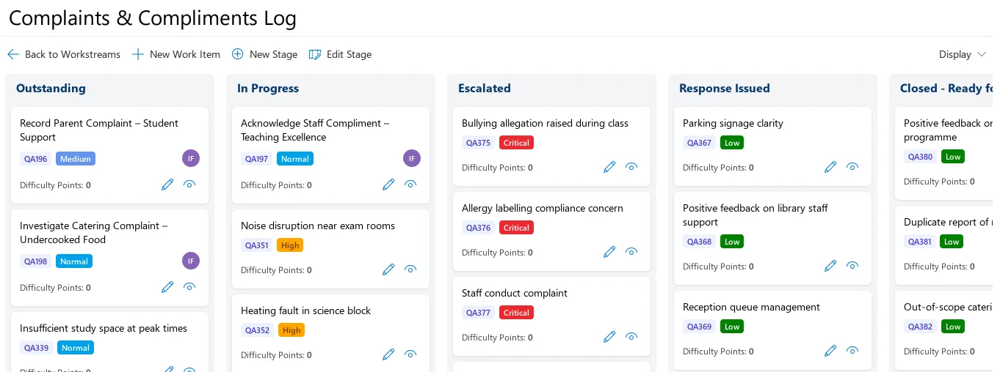
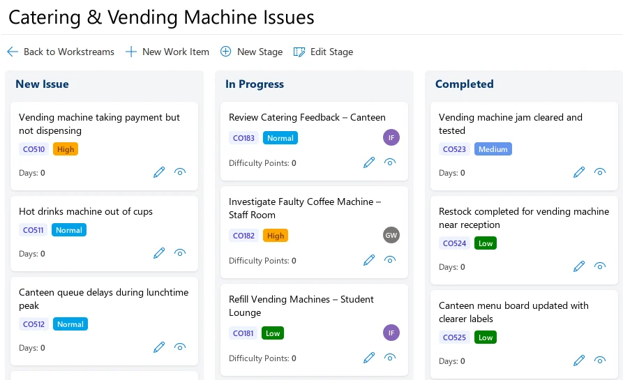
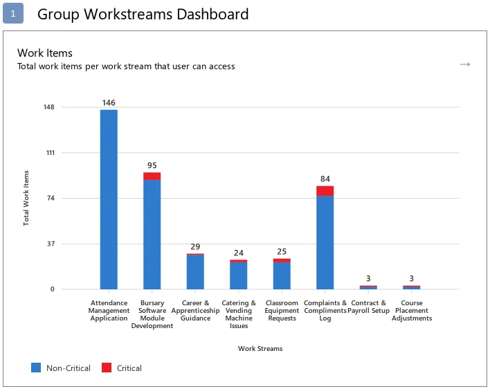

Group WorkStreams
Each stream of everyday work, such as complaints, catering faults or HR requests, gets a Kanban board with stages that suit it.


Screens from the ZedX demo, which uses sample data for a college group.
One workstream for each kind of work
Each workstream handles one kind of work. The demo college has separate workstreams for catering and vending issues, CPD and training requests, complaints and others. Each one sits in a portfolio such as Campus Operations, HR or Accounts & Finance.
The list shows every workstream with its portfolio, owners and active tasks, so you can see who looks after what.


Give each workstream the stages it needs
You add and change stages on the board itself, with the New Stage and Edit Stage buttons. The complaints log above uses five stages to track escalations and responses. Catering issues get by with three: New Issue, In Progress and Completed.
Each work item shows a reference and a priority from Low to Critical, plus the assignee if there is one. You can see what is urgent, and who has it, at a glance.


See where work is piling up
The Insights dashboard charts the work items in every workstream you can access, with critical items in red. It shows which services carry the most work, and where the critical items are, on one screen.


Using it with other ZedX apps
- Agile Sprints
- Teams that also run sprints can use Agile Sprints alongside it. Sprint work stays in Agile Sprints, and operational and ad-hoc work stays in Group WorkStreams. About Agile Sprints
- Project Portfolios
- A project in Project Portfolios can link its workstreams to Group WorkStreams. Leaders then follow progress through the project’s regular structured updates. How leaders follow progress
- Sign-in, hosting and licensing
- Group WorkStreams runs on the ZedX Apps Platform. You get single sign-on with Microsoft Entra ID or a ZedX login, access controlled for each app, and per-user or unlimited licences. Sign-in, hosting and licensing
Ask Swiftpro for a Group WorkStreams demo
Use the contact form on zedxapps.com. Tell Swiftpro, the company that makes ZedX, which kinds of work you would like to run as workstreams, and they’ll get back to you.